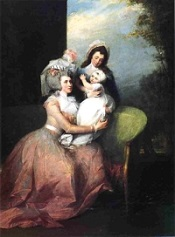

Angelica Schuyler Church
Angelica Schuyler was born in February 1756. Christened "Engeltie," she was the first child born to the marriage of Philip and Catherine Van Rensselaer Schuyler. The eldest of fifteen children born over the next twenty-five years, she grew up in upper class homes in Albany and on the country estates of the two most affluent families in the region.
In June 1777, she married English opportunist John Barker Church. The couple is said to have eloped. Their first child was born in Boston the next April. By the end of the century, the marriage had produced seven more children who were christened in Boston, Paris, London, New York, and Albany.
Angelica had met Church when he visited her father on wartime business. Following their marriage the couple lived out the war mostly in Boston from where Church served the supply side of the Revolution.
In 1783, Angelica, her husband and four children left for Paris so that Church could pursue payment of his bills on the French government. Except for two return visits, they were away from America until 1797 when they landed in New York. After re-uniting with her kin, the Churches turned their attention to western New York where they had taken possession of a large tract awarded to him to re-pay wartime financial aid. A planned village (fashioned on the shape of Paris) was named "Angelica" and was located on the banks of the Genesee River where their son built a mansion known as "The Belvidere."
In June 1803, she was named in the will filed by her famous father. She was one of four living daughters slated to receive a fair and proportional share of his vast estate.
Throughout her life, Angelica was recognized by the most important public figures of the day for her beauty, charm, wit, and all-around desirability. More than one source characterized her as "Muse, Confidante, and thief of hearts." Clearly, she was a babe!
Angelica Schuyler Church died in New York City in March 1814. She was buried in the Trinity Church cemetery. She was in her fifty-eighth year. Her husband died four years later.
The Marriage date has been chosen from the license date of June 21, 1777. Angelica's father's bible is mute on the subject.
Painting by Patriot portraitist John Trumbull - Paris 1784 or 85: The following description has been copied for now from an online source. "Group portrait of Mrs. Church, her son Philip, and servant, painted in London in 1784. Trumbull had met John Barker Church in America in 1777. Soon afterward Church met and married Angelica Schuyler, eldest daughter of Gen. Philip Schuyler, and their acquaintance with Trumbull continued in Boston in 1778 and 1779 where they lived and Trumbull was studying. The friendship was renewed in London in 1784. Church not only remained on friendly terms with Trumbull but assisted him financially while the latter was in England (The Autobiography of Colonel John Trumbull, ed. Theodore Sizer, p. 90, 93-5). Mrs. Church visited Paris in the winter of 1787-1788 and was doubtless introduced to Jefferson by Trumbull, who was staying with Jefferson at the time. The correspond ence between Jefferson and Mrs. Church, which began early in 1788 and continued until 1802, equals that with Maria Cosway, Abigail Adams, and Mme. de Tesse in sprightliness, mutual understanding, and affection. (Courtesy of Peter B. Olney, Old Saybrook, Conn.)"